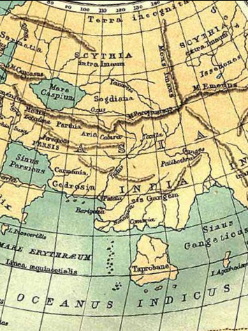
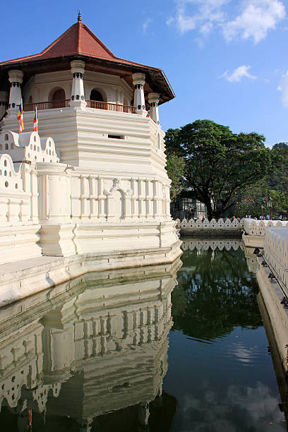

Sri Lanka is a country with a long history and a similarly long and rich economic history. A study of that history will doubtlessly prove fruitful not only for economists but for everyone in the society. Coins used through different time periods of a country play an important role when studying the history of that country. Although small in size, a coin has the ability of giving a wealth of information about the economic and cultural history of the country where it was used, through signs that remain on them.

Extract of the world map by Ptolemy
The image depicted here is an extract from the world map by Ptolemy who lived in 150 A.D in Rome. The map is drawn to considerably precise longitudinal and latitudinal coordinates. However, despite his accurate depiction of the Mediterranean, Europe and the Middle Eastern regions on the map; Sri Lanka appears significantly over-sized. This is no coincidence. It illustrates the recognition Sri Lanka had in the eyes of the world before and during Ptolemy’s time. Although it is small in length and width, the world as a whole considered Sri Lanka to be of great worth.
In the past, Sri Lanka managed to garner the attention of the world partly due to the fact that it was uniquely placed at the center of the Silk Road that spanned from Far East Asia to Europe. It was also a doorway to entering the Overland Silk Road. Traders and explorers from the East and West would converge on this island. Sri Lanka functioned as a trading center for these travelers. There are Greek, Roman and Chinese texts that include a multitude of information that serve as testament to this.
These facts reveal the Economic history of Sri Lanka. Upon close inspection of the great irrigation projects of those times, it becomes clear that the disciplines of engineering and agriculture were highly developed in Sri Lanka. The island also had an efficient trading system in place.
Information detailing these endeavors can be found in epigraphs, ‘Vansha Katha’ (Chronicles of Dynasties), ancient texts and letters as well as in archeological evidence. Coins and epigraphs have a special place among this evidence. Being primary pieces of evidence regarding the economic history of Sri Lanka, these coins and epigraphs can be found in large numbers scattered across the island. Aside from local sources, afore mentioned records by international traders and foreigners also provide information about the trade mechanisms of Sri Lanka’s past. This information is extremely advantageous in the attempt to construct a timeline for the history of Sri Lanka’s economy.
Sri Lanka’s currency-use can be divided into following periods.
01. Anuradhapura Era
02. Polonnaruwa to Kotte Era
03. Kandy Era
04. Colonial Era
05. Post-Independence Period since Establishment of the Central Bank of Ceylon
href="index1.html" >
Next


05. Post-Independence Period since Establishment of the Central Bank of Ceylon